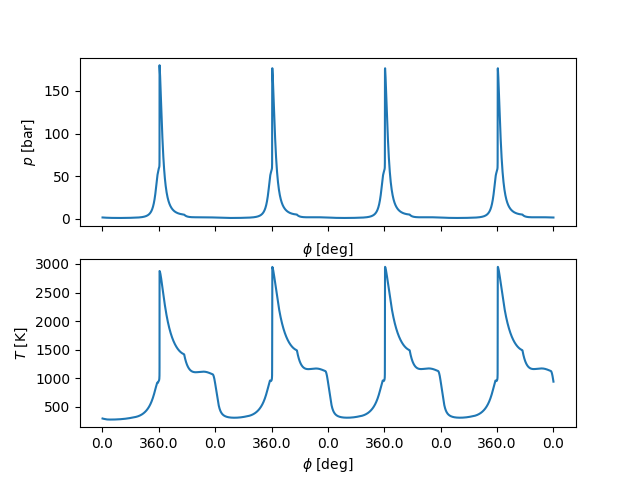
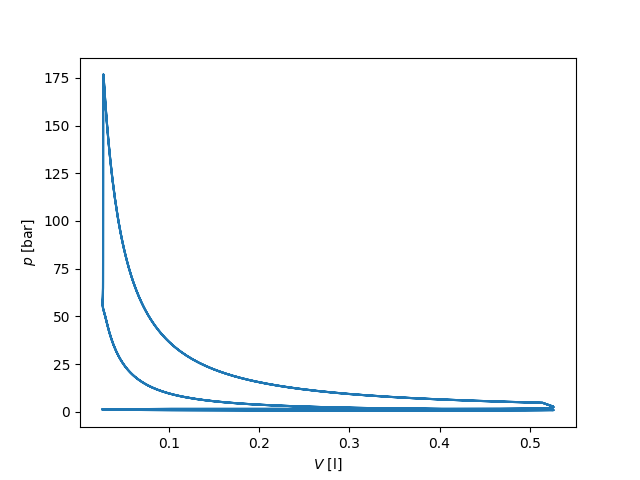
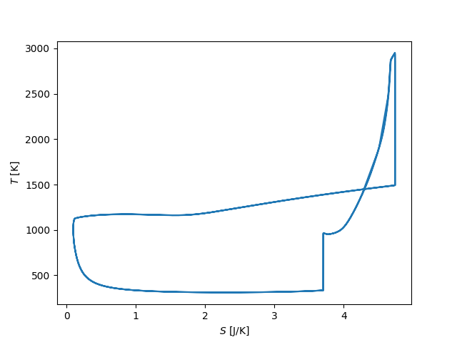
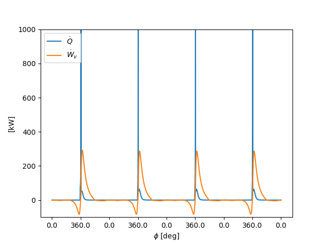
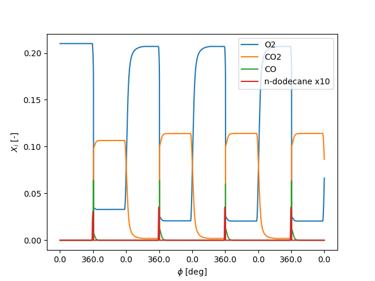

Note
Go to the end to download the full example code.
Diesel-type internal combustion engine simulation with gaseous fuel#
The simulation uses n-dodecane as fuel, which is injected close to top dead center. Note that this example uses numerous simplifying assumptions and thus serves for illustration purposes only.
Requires: cantera >= 3.0, scipy >= 0.19, matplotlib >= 2.0
import cantera as ct
import numpy as np
import matplotlib.pyplot as plt
Input Parameters#
# reaction mechanism, kinetics type and compositions
reaction_mechanism = 'nDodecane_Reitz.yaml'
phase_name = 'nDodecane_IG'
comp_air = 'o2:1, n2:3.76'
comp_fuel = 'c12h26:1'
f = 3000. / 60. # engine speed [1/s] (3000 rpm)
V_H = .5e-3 # displaced volume [m**3]
epsilon = 20. # compression ratio [-]
d_piston = 0.083 # piston diameter [m]
# turbocharger temperature, pressure, and composition
T_inlet = 300. # K
p_inlet = 1.3e5 # Pa
comp_inlet = comp_air
# outlet pressure
p_outlet = 1.2e5 # Pa
# fuel properties (gaseous!)
T_injector = 300. # K
p_injector = 1600e5 # Pa
comp_injector = comp_fuel
# ambient properties
T_ambient = 300. # K
p_ambient = 1e5 # Pa
comp_ambient = comp_air
# Inlet valve friction coefficient, open and close timings
inlet_valve_coeff = 1.e-6
inlet_open = -18. / 180. * np.pi
inlet_close = 198. / 180. * np.pi
# Outlet valve friction coefficient, open and close timings
outlet_valve_coeff = 1.e-6
outlet_open = 522. / 180 * np.pi
outlet_close = 18. / 180. * np.pi
# Fuel mass, injector open and close timings
injector_open = 350. / 180. * np.pi
injector_close = 365. / 180. * np.pi
injector_mass = 3.2e-5 # kg
# Simulation time and parameters
sim_n_revolutions = 8
delta_T_max = 20.
rtol = 1.e-12
atol = 1.e-16
Set up IC engine Parameters and Functions#
V_oT = V_H / (epsilon - 1.)
A_piston = .25 * np.pi * d_piston ** 2
stroke = V_H / A_piston
def crank_angle(t):
"""Convert time to crank angle"""
return np.remainder(2 * np.pi * f * t, 4 * np.pi)
def piston_speed(t):
"""Approximate piston speed with sinusoidal velocity profile"""
return - stroke / 2 * 2 * np.pi * f * np.sin(crank_angle(t))
Set up Reactor Network#
# load reaction mechanism
gas = ct.Solution(reaction_mechanism, phase_name)
# define initial state and set up reactor
gas.TPX = T_inlet, p_inlet, comp_inlet
cyl = ct.IdealGasReactor(gas)
cyl.volume = V_oT
# define inlet state
gas.TPX = T_inlet, p_inlet, comp_inlet
# Note: The previous line is technically not needed as the state of the gas object is
# already set correctly; change if inlet state is different from the reactor state.
inlet = ct.Reservoir(gas)
# inlet valve
inlet_valve = ct.Valve(inlet, cyl)
inlet_delta = np.mod(inlet_close - inlet_open, 4 * np.pi)
inlet_valve.valve_coeff = inlet_valve_coeff
inlet_valve.time_function = (
lambda t: np.mod(crank_angle(t) - inlet_open, 4 * np.pi) < inlet_delta)
# define injector state (gaseous!)
gas.TPX = T_injector, p_injector, comp_injector
injector = ct.Reservoir(gas)
# injector is modeled as a mass flow controller
injector_mfc = ct.MassFlowController(injector, cyl)
injector_delta = np.mod(injector_close - injector_open, 4 * np.pi)
injector_t_open = (injector_close - injector_open) / 2. / np.pi / f
injector_mfc.mass_flow_coeff = injector_mass / injector_t_open
injector_mfc.time_function = (
lambda t: np.mod(crank_angle(t) - injector_open, 4 * np.pi) < injector_delta)
# define outlet pressure (temperature and composition don't matter)
gas.TPX = T_ambient, p_outlet, comp_ambient
outlet = ct.Reservoir(gas)
# outlet valve
outlet_valve = ct.Valve(cyl, outlet)
outlet_delta = np.mod(outlet_close - outlet_open, 4 * np.pi)
outlet_valve.valve_coeff = outlet_valve_coeff
outlet_valve.time_function = (
lambda t: np.mod(crank_angle(t) - outlet_open, 4 * np.pi) < outlet_delta)
# define ambient pressure (temperature and composition don't matter)
gas.TPX = T_ambient, p_ambient, comp_ambient
ambient_air = ct.Reservoir(gas)
# piston is modeled as a moving wall
piston = ct.Wall(ambient_air, cyl)
piston.area = A_piston
piston.velocity = piston_speed
# create a reactor network containing the cylinder and limit advance step
sim = ct.ReactorNet([cyl])
sim.rtol, sim.atol = rtol, atol
cyl.set_advance_limit('temperature', delta_T_max)
Run Simulation#
# set up output data arrays
states = ct.SolutionArray(
cyl.thermo,
extra=('t', 'ca', 'V', 'm', 'mdot_in', 'mdot_out', 'dWv_dt'),
)
# simulate with a maximum resolution of 1 deg crank angle
dt = 1. / (360 * f)
t_stop = sim_n_revolutions / f
while sim.time < t_stop:
# perform time integration
sim.advance(sim.time + dt)
# calculate results to be stored
dWv_dt = - (cyl.thermo.P - ambient_air.thermo.P) * A_piston * \
piston_speed(sim.time)
# append output data
states.append(cyl.thermo.state,
t=sim.time, ca=crank_angle(sim.time),
V=cyl.volume, m=cyl.mass,
mdot_in=inlet_valve.mass_flow_rate,
mdot_out=outlet_valve.mass_flow_rate,
dWv_dt=dWv_dt)
Plot Results in matplotlib#
def ca_ticks(t):
"""Helper function converts time to rounded crank angle."""
return np.round(crank_angle(t) * 180 / np.pi, decimals=1)
t = states.t
# pressure and temperature
xticks = np.arange(0, 0.18, 0.02)
fig, ax = plt.subplots(nrows=2)
ax[0].plot(t, states.P / 1.e5)
ax[0].set_ylabel('$p$ [bar]')
ax[0].set_xlabel(r'$\phi$ [deg]')
ax[0].set_xticklabels([])
ax[1].plot(t, states.T)
ax[1].set_ylabel('$T$ [K]')
ax[1].set_xlabel(r'$\phi$ [deg]')
ax[1].set_xticks(xticks)
ax[1].set_xticklabels(ca_ticks(xticks))
plt.show()
# p-V diagram
fig, ax = plt.subplots()
ax.plot(states.V[t > 0.04] * 1000, states.P[t > 0.04] / 1.e5)
ax.set_xlabel('$V$ [l]')
ax.set_ylabel('$p$ [bar]')
plt.show()
# T-S diagram
fig, ax = plt.subplots()
ax.plot(states.m[t > 0.04] * states.s[t > 0.04], states.T[t > 0.04])
ax.set_xlabel('$S$ [J/K]')
ax.set_ylabel('$T$ [K]')
plt.show()
# heat of reaction and expansion work
fig, ax = plt.subplots()
ax.plot(t, 1.e-3 * states.heat_release_rate * states.V, label=r'$\dot{Q}$')
ax.plot(t, 1.e-3 * states.dWv_dt, label=r'$\dot{W}_v$')
ax.set_ylim(-1e2, 1e3)
ax.legend(loc=0)
ax.set_ylabel('[kW]')
ax.set_xlabel(r'$\phi$ [deg]')
ax.set_xticks(xticks)
ax.set_xticklabels(ca_ticks(xticks))
plt.show()
# gas composition
fig, ax = plt.subplots()
ax.plot(t, states('o2').X, label='O2')
ax.plot(t, states('co2').X, label='CO2')
ax.plot(t, states('co').X, label='CO')
ax.plot(t, states('c12h26').X * 10, label='n-dodecane x10')
ax.legend(loc=0)
ax.set_ylabel('$X_i$ [-]')
ax.set_xlabel(r'$\phi$ [deg]')
ax.set_xticks(xticks)
ax.set_xticklabels(ca_ticks(xticks))
plt.show()
- 
- 
- 
- 
- 
Integral Results#
# heat release
Q = np.trapz(states.heat_release_rate * states.V, t)
output_str = '{:45s}{:>4.1f} {}'
print(output_str.format('Heat release rate per cylinder (estimate):',
Q / t[-1] / 1000., 'kW'))
# expansion power
W = np.trapz(states.dWv_dt, t)
print(output_str.format('Expansion power per cylinder (estimate):',
W / t[-1] / 1000., 'kW'))
# efficiency
eta = W / Q
print(output_str.format('Efficiency (estimate):', eta * 100., '%'))
# CO emissions
MW = states.mean_molecular_weight
CO_emission = np.trapz(MW * states.mdot_out * states('CO').X[:, 0], t)
CO_emission /= np.trapz(MW * states.mdot_out, t)
print(output_str.format('CO emission (estimate):', CO_emission * 1.e6, 'ppm'))
/home/runner/work/cantera/cantera/build/doc/samples/python/reactors/ic_engine.py:255: DeprecationWarning: `trapz` is deprecated. Use `trapezoid` instead, or one of the numerical integration functions in `scipy.integrate`.
Q = np.trapz(states.heat_release_rate * states.V, t)
Heat release rate per cylinder (estimate): 34.8 kW
/home/runner/work/cantera/cantera/build/doc/samples/python/reactors/ic_engine.py:261: DeprecationWarning: `trapz` is deprecated. Use `trapezoid` instead, or one of the numerical integration functions in `scipy.integrate`.
W = np.trapz(states.dWv_dt, t)
Expansion power per cylinder (estimate): 18.5 kW
Efficiency (estimate): 53.2 %
/home/runner/work/cantera/cantera/build/doc/samples/python/reactors/ic_engine.py:271: DeprecationWarning: `trapz` is deprecated. Use `trapezoid` instead, or one of the numerical integration functions in `scipy.integrate`.
CO_emission = np.trapz(MW * states.mdot_out * states('CO').X[:, 0], t)
/home/runner/work/cantera/cantera/build/doc/samples/python/reactors/ic_engine.py:272: DeprecationWarning: `trapz` is deprecated. Use `trapezoid` instead, or one of the numerical integration functions in `scipy.integrate`.
CO_emission /= np.trapz(MW * states.mdot_out, t)
CO emission (estimate): 8.8 ppm
Total running time of the script: (0 minutes 8.337 seconds)